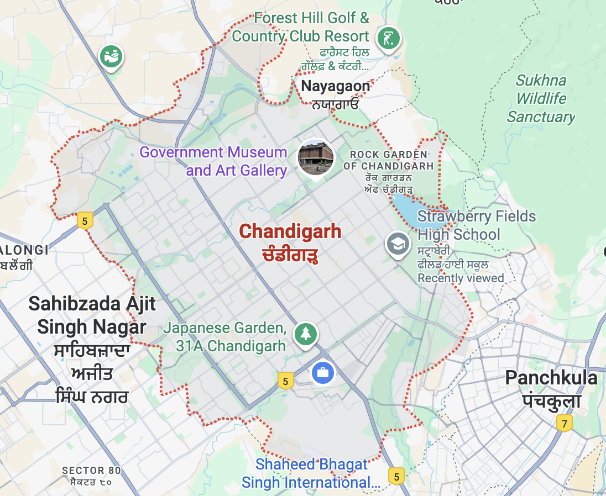
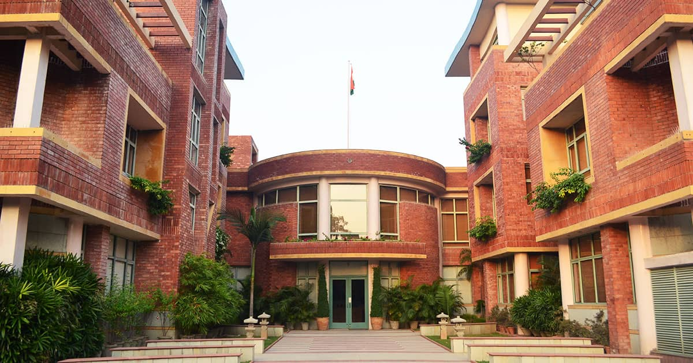
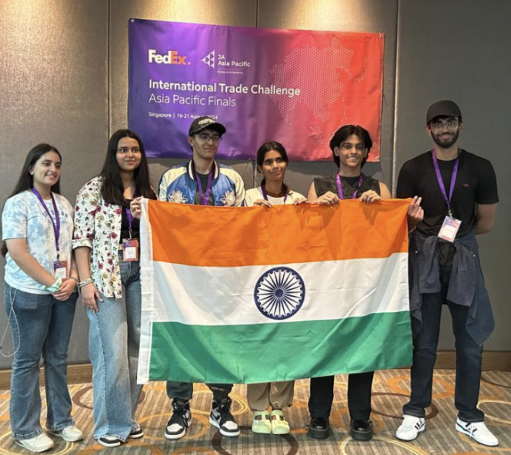
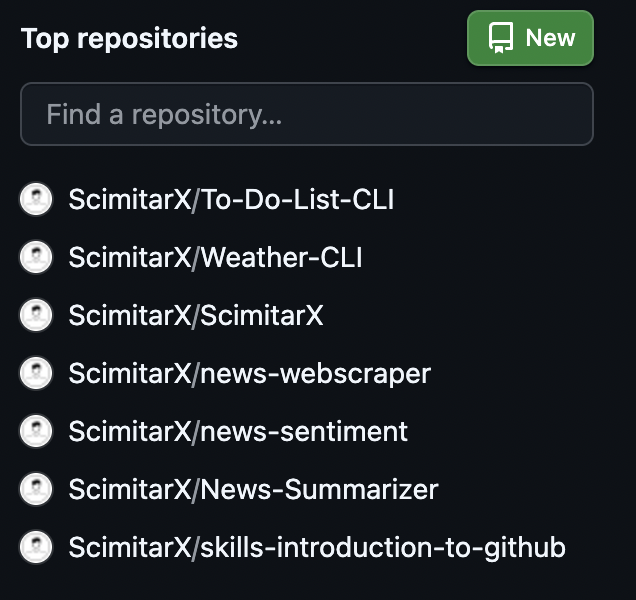
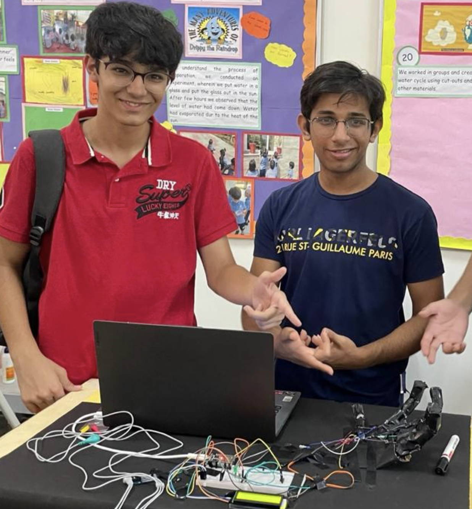
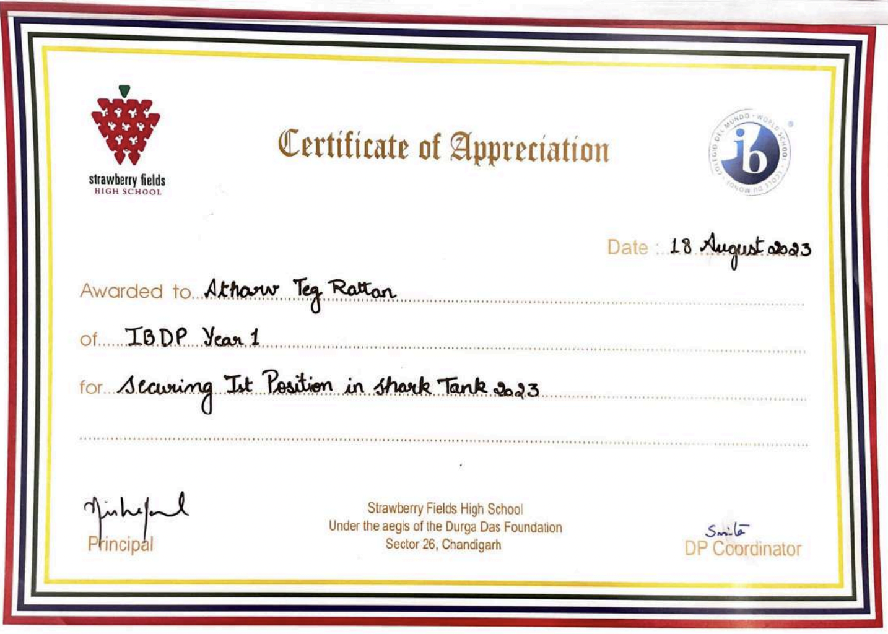
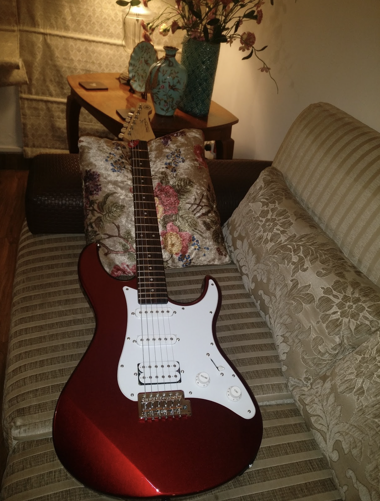

Quick Facts
- Email: athatvteg@gmail.com
- GitHub: github.com/ScimitarX
- Location: Mohali, Punjab, India
- Languages: English (Fluent), Hindi (Fluent), French (Intermediate)

Education
International Baccalaureate Diploma Programme — Strawberry Fields High School, Chandigarh (2023–2025).
- Subjects: Business Management, Mathematics: Applications & Interpretation, Computer Science, English Literature, French B, Economics
- Predicted total: 31 IB points
- SAT: 1440 (ERW 720, Math 720)
- Extended Essay: impact of the OpenAI–Microsoft partnership on AI innovation ecosystems
- TOK Exhibition: analysis with artifacts like the Voyager Golden Record and hieroglyphics

Leadership & Entrepreneurship
- FedEx/JA International Trade Challenge — India National Champion (2024); APAC Finalist (Singapore).
- Founder & Secretary, Entrepreneurship Club — organized school Shark Tank events and cross-disciplinary initiatives.
- CashCare initiative — financial-literacy outreach; presented at the Harvard Youth Leadership Conference (India).

Projects & Research
- AI in Newsrooms (Mentorship, 2025): workflows for summarization, video upscaling, and synthetic voice; responsible adoption.
- EMG-Controlled Robotic Hand: Arduino + EMG sensors with origami-inspired mechanics.
- Fake-News Detector: LSTM-based classifier for article credibility.
- Desktop Gardening Assistant: Tkinter + SQLite productivity tool.
- Python Tools for News: scraping, summarization, sentiment analysis.
- Smart-Home Automations: Alexa routines and sensor integrations.
See Projects for short write-ups and screenshots.

Skills
- Programming: Java; Python; Python for Arduino
- AI & Automation: LLM tooling; GPT APIs; workflow automation
- Hardware: Arduino prototyping; EMG sensors
- Research & Writing: structured analysis; documentation
- Communication: presentations, pitching, collaboration

Awards & Achievements
- FedEx/JA ITC — India National Champion (2024); APAC Finalist (2024)
- Intra-school Shark Tank — 1st place; Communique Business Competition — team winner
- World Robotics Olympiad — regional winner; national finalist; FLL participant
- School Mathematics Quiz — 1st place
- Internships: NetSolutions (2023), Netsmartz (2024) — UI/UX, SaaS, applied AI tools

Interests
- Fine-tipped pen sketches and digital studies
- Guitar (acoustic and electric)
- Football and basketball
